건축산업기사 (2004-03-07 기출문제)
1과목: 건축계획
1. 쇼핑센터를 구성하는 주요 요소가 아닌 것은?
- 핵점포
- 몰(Mall)
- 페데스트리언 지대(pedestrian area)
- 터미널(Terminal)
(정답률: 알수없음)

2. 방적공장계획에서 무창공장이 채용되고 있는데 이 무창 공장의 특징에 대한 설명으로 옳지 않은 것은?
- 외부에서의 소음의 침입이 없으므로 내부에서는 소음을 거의 느끼지 못한다.
- 작업면의 조도를 균일화할 수 있다.
- 온습도 조정용의 동력소비량이 적다.
- 공장의 배치계획을 할 때 방위에 좌우되는 일이 적다.
(정답률: 71%)
3. 주택의 각실 계획에 관한 설명 중 옳지 않은 것은?
- 현관은 출입과 접객의 편리를 위해 크게 하면 할수록 좋다.
- 계단은 안전상 구배, 폭, 난간 및 마감방법에 중점을 두고 실내디자인상 의장적인 고려를 한다.
- 거실은 주행위(住行爲) 개개의 복합적인 기능을 갖고 있으며 이에 대한 적합한 가구와 어느 정도 활동성을 고려한 계획이 되어야 한다.
- 식당 및 부엌은 능률좋게 하고 옥외작업장 및 정원과 유기적으로 결합되게 한다.
(정답률: 40%)
4. 중복도형 아파트에 관한 설명 중 잘못된 것은?
- 도심지의 독신자 아파트에 많이 이용된다.
- 프라이버시가 나쁘고 시끄럽다.
- 채광, 통풍조건을 양호하게 할 수 있다.
- 대지에 대한 건물이용도가 높다.
(정답률: 60%)
5. 고층 사무소를 core system으로 계획할 때 장점이라고 할수 없는 것은?
- 설비의 집약
- 구조적인 이점
- 유효면적의 증가
- 독립성의 보장
(정답률: 32%)
6. 파사드 계획에 있어 보석상, 귀금속 상점 등 고객이 비교적 오래 머물러 있는 경우나 고객의 이용이 비교적 많지 않은 상점에 가장 적합한 형식은?
- 개방형
- 폐쇄형
- 중간형
- 혼합형
(정답률: 55%)
7. 상점건축에서 쇼윈도(Show window)의 반사를 방지하는 방법으로 옳지 않은 것은?
- 해가리개를 설치한다.
- 내부를 외부보다 어둡게 한다.
- 곡면유리를 사용한다.
- 유리를 경사지게 설치한다.
(정답률: 86%)
8. 학교건축에 관한 설명 중 잘못된 것은?
- 저학년과 고학년은 정신적, 육체적인 차이로 오는 마찰을 막기 위해 구획하여 준다.
- 초등학교 저학년에서는 종합교실형(U형)의 학교운영 방식이 장려된다.
- 단층교사는 옥외 학습활동과 연결이 좋으므로 저학년보다 체육활동이 많은 고학년에 알맞다.
- 다층교사는 설비를 집약시키기 쉽고 부지 이용율을 높일 수 있다.
(정답률: 34%)
9. 공장의 작업장 Layout의 계획시 다품종 소량생산이나 주문생산의 경우와 표준화가 행해지기 어려운 경우 채용되는 형식으로 가장 적합한 것은?
- 제품 중심의 Layout
- 고정식 Layout
- 공정 중심의 Layout
- 혼성식 Layout
(정답률: 60%)
10. 학교건축계획에서 공간의 융통성의 요구를 해결할 수 있는 효율적 방안으로 가장 적합한 것은?
- 내력벽 구조로 한다.
- 공간을 다목적으로 사용한다.
- 각 교실을 특수화 한다.
- 교지를 충분히 확보한다.
(정답률: 34%)
11. 고층 공동주택에서 이웃간의 친교형성이 가장 빈번히 일어날 수 있는 곳은?
- 계단실
- 주호 앞 현관
- 주동의 현관
- 관리사무실
(정답률: 46%)
12. 건물의 계획시 모듈을 설정하여 척도를 조정함으로써 얻게 되는 잇점과 가장 거리가 먼 것은?
- 건축구성재의 생산비용이 낮아질 수 있다.
- 형태가 다양해진다.
- 미적질서를 갖게 된다.
- 공사기간이 단축될 수 있다.
(정답률: 알수없음)
13. 교실의 배치형식 중에서 엘보우형(elbow access)에 관한 설명으로 적당하지 못한 것은?
- 학습의 순수율이 높다.
- 일조, 통풍 등 실내환경이 균일하다.
- 복도의 면적이 절약된다.
- 분관별로 특색있는 계획을 할 수 있다.
(정답률: 54%)
14. 고층건물의 서비스 코어내 들어갈 공간으로서 부적당한 것은?
- 엘리베이터홀
- 화장실
- 공조덕트
- 배전실
(정답률: 73%)
15. 사무소건축에서 유효율이란 무엇인가?
- 업무공간과 공용공간의 비
- 임대면적과 연면적의 비
- 연면적과 대지면적의 비
- 그 층의 바닥면적과 연면적의 비
(정답률: 54%)
16. 사무소건축 화장실의 각종 치수 중 가장 적당한 것은?
- 소변기 상호간 간격 : 80cm
- 안여닫이 대변실의 깊이 : 70cm
- 세면기 높이 : 100cm
- 세면기 상호간 간격 : 50cm
(정답률: 알수없음)
17. 상점 내부의 기본조명에 필요한 조명기구수를 구하는 데 관계없는 사항은?
- 평균조도
- 실면적
- 쇼케이스 수
- 램프광속
(정답률: 28%)
18. 아파트 단지내 주동배치시 고려하여야 할 사항이 아닌것은?
- 단지내 커뮤니티가 자연스럽게 형성되도록 한다.
- 옥외주차장을 이용하여 충분한 오픈스페이스를 확보한다.
- 주동 배치계획에서 일조, 풍향, 방화 등에 유의해야 한다.
- 다양한 배치기법을 통하여 개성적인 생활공간으로서의 옥외공간이 되도록 한다.
(정답률: 25%)
19. 가사노동의 경감을 위한 방법으로 옳지 않은 것은?
- 설비를 좋게 하고 되도록 기계화 할 것
- 평면에서의 주부의 동선이 단축되도록 할 것
- 청소 등의 노력을 절감하기 위하여 좁은 주거로 계획할 것
- 능률이 좋은 부엌시설이나 가사실을 갖출 것
(정답률: 85%)
20. 건축물의 성립에 영향을 미치는 요소 중 가장 영향력이 적은 것은?
- 지역의 기후 및 풍토적 요소
- 건축재료 및 기술적 요소
- 건축시공상의 편리적 요소
- 사회ㆍ문화적 요소
(정답률: 19%)
2과목: 건축시공
21. 철근의 용접으로 강도가 약하여 구조용으로 사용하지 않는 용접법은?
- 아아크용접(arc welding)
- 가스용접
- 플러시버트용접(flush butt welding)
- 가스압접
(정답률: 50%)
22. 회반죽 바름에서 균열을 방지하기 위한 공법으로 옳지 않은 것은?
- 정벌은 두껍게 바르는 것이 균열방지에 좋다.
- 초벌, 재벌에는 거친 모래를 넣는다.
- 초벌, 재벌, 정벌에는 적당량의 여물을 넣는다.
- 쫄대는 두꺼운 것이 좋고 수염은 충분히 넣는다.
(정답률: 67%)
23. 공사계획 중 가설계획시에 고려되어야 할 사항 중 중요성이 가장 적은 것은?
- 가설물, 가설자재의 운영
- 도급금액과 공사착공시기 및 공사준공시기
- 운반 및 교통사항
- 공사의 규모, 시공정밀도 및 공사내용
(정답률: 0%)
24. 다음중 유리 섬유판의 특성이 아닌 것은?
- 독특한 결의 섬세한 아름다움이 있다.
- 단열 및 불연성이 있으나 표면경도가 적다.
- 흡음효과가 없다.
- 가공성이 좋다.
(정답률: 30%)
25. 건축공사의 원가 계산에서 현장에서의 공사용수비는 어느 항목에 포함되는가?
- 재료비
- 공통가설비
- 외주비
- 노무비
(정답률: 53%)
26. 거푸집에 가해지는 콘크리트의 측압에 대하여 설명한 것중 옳지 않은 것은?
- 부어넣기 속도가 빠를수록 측압이 크다.
- 묽은 콘크리트 일수록 측압이 크다.
- 진동기를 사용하여 다질수록 측압이 크다.
- 외기온도가 높을수록 측압이 크다.
(정답률: 알수없음)
27. 벽돌쌓기 중 가장 튼튼한 쌓기법으로 한켜는 마구리쌓기 다음 켜는 길이쌓기로 하고 모서리나 벽끝에는 이오토막을 쓰는 쌓기 방법은?
- 영식쌓기
- 화란식쌓기
- 불식쌓기
- 미식쌓기
(정답률: 59%)
28. 시멘트의 용적 100m3 일 경우 물시멘트비를 55%로 하면 단위수량은 얼마인가? (단 시멘트의 비중은 3.15, 물의 비중은 1로 하고 계산값은 소수점 첫째자리에서 반올림함)
- 55 kg/m3
- 70 kg/m3
- 173 kg/m3
- 220 kg/m3
(정답률: 28%)
29. 다음 흙막이 공법중 흙막이 자체가 지하 본구조물의 옹벽을 형성하는 것은?
- H-Pile 및 토류판
- 보강토벽 (soil nailing)
- 시멘트 주열벽 (soil cement wall)
- 지하연속벽 (slurry wall)
(정답률: 알수없음)
30. 다음 벽돌쌓기 공사의 설명 중 틀린 것은?
- 불합격한 벽돌을 장외로 반출한다.
- 세로줄눈은 통줄눈으로 해도 무방하다.
- 모르타르강도는 벽돌강도와 비슷하거나 강해야 한다.
- 내화벽돌은 물축임을 하지 않는다.
(정답률: 37%)
31. 슬라이딩 포옴(sliding form)에 관한 다음 기술중 부적당한 것은?
- 이동식 거푸집(travelling form)이라고도 하며 돌출물이 있는 벽체 기둥 시공에는 이용할 수 없고 보통 사일로(silo) 축조에 이용된다.
- 거푸집은 1단(높이1.2m 정도)만 가지고도 되므로 거푸집 재료와 거푸집조립, 제거에 소요되는 노력이 절약된다.
- 내외의 비계 발판을 따로 가설할 필요가 없다.
- 거푸집의 끌어 올리기와 콘크리트의 붓기 속도는 1일 (주야작업시) 약 3~5m이다.
(정답률: 알수없음)
32. 유리제품에서 보온, 방음과 관계가 없는 것은?
- 폼 글라스(foam glass)
- 글라스 울(glass wool)
- 플렉시 글라스(plexi glass)
- 페어 글라스(pair glass)
(정답률: 46%)
33. 커튼월을 외관형태로 분류할 때 그 종류에 해당하지 않는 것은?
- 샛기둥 방식(mullion)
- 스팬드럴 방식(spandrel type)
- 격자 방식(grid type)
- 내력벽 방식(wall type)
(정답률: 알수없음)
34. 다음 도료 중 건조가 가장 빠른 것은?
- 오일페인트
- 래커
- 바니쉬
- 레이크(lake)
(정답률: 28%)
35. 콘크리트 타설시의 일반적인 주의사항으로 옳지 않은 것은?
- 운반거리가 먼 곳으로부터 타설한다.
- 자유낙하 높이를 작게한다.
- 콘크리트가 수평으로 흘러가도록 한다.
- 각층이 수평이 되도록 타설면을 고른다.
(정답률: 알수없음)
36. 토사를 파내는 형식으로 깊은 흙파기용, 흙막이의 버팀대가 있어 좁은 곳, 케이슨(caisson) 내의 굴착 등에 적합한 기계는?
- 드래그셔불(drag shovel)
- 드래그라인(drag line)
- 앵글도저(angle dozer)
- 클램쉘(clam shell)
(정답률: 64%)
37. 다음중 가설 공사계획에 속하는 것은?
- 인력동원계획
- 공사용수계획
- 안전관리계획
- 품질관리계획
(정답률: 알수없음)
38. 건축연면적(m2)당 먹매김의 품이 가장 많이 소요되는 건축물은?
- 보통주택
- 학교
- 사무소
- 공장
(정답률: 63%)
39. 열어진 여닫이 문이 저절로 닫아지게한 창호철물은 다음중 어느 것인가?
- 도아 스테인(Door stain)
- 도아 스톱(Door stop)
- 도아 첵크(Door check)
- 도아 행거(Door hanger)
(정답률: 알수없음)
40. 다음 용어의 설명 중 옳지 않은 것은?
- 이벤트(event) : 작업과 작업을 결합하는 점 및 시점, 종료점
- 패스(path) : 네트워크 중 둘 이상의 작업이 이어짐
- 플로우트(float) : 작업의 여유시간
- 액티비티(activity) : 작업을 수행하는데 필요한 시간
(정답률: 25%)
3과목: 건축구조
41. 그림과 같은 구조물에서 휨모멘트가 0이 되는 점(변곡점 變曲点)은 몇 개 있는가?
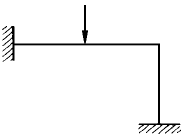
- 1개
- 2개
- 3개
- 4개
(정답률: 32%)
42. 다음 중 조적구조에서 통줄눈을 피하는 주된 이유는?
- 시공을 용이하게 하기 위해
- 물량을 줄이기 위해
- 하중이 골고루 분산되게 하기 위해
- 외관을 아름답게 하기 위해
(정답률: 46%)
43. 목조 벽체의 가새에 대한 설명 중 잘못된 것은?
- 가새는 연직하중에 대한 보강재이다.
- 가새에는 압축력이나 인장력이 작용한다.
- 가새의 경사는 45° 에 가까울수록 좋다.
- 가새의 배치는 건물의 안전과 관계 있다.
(정답률: 20%)
44. 철근 콘크리트의 T형 단순보의 중앙부 배근으로 가장 알맞은 것은?
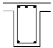
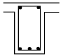
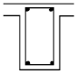
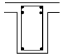
(정답률: 알수없음)
45. 극한강도설계법에 의한 철근콘크리트의 보설계에서 그림과 같은 단면에서 콘크리트에 의한 전단강도 VC는 약 얼마인가? (단, fck = 24MPa(=240kgf/cm2), fy= 400MPa(=4,000kgf/cm2), D10 철근 1개의 단면적은 71mm2 이다. )
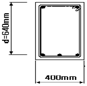
- 150kN(=15000kgf)
- 180kN(=18000kgf)
- 210kN(=21000kgf)
- 244kN(=24400kgf)
(정답률: 30%)
46. 그림과 같은 트러스에서 u1의 부재력은? (단, "-"는 압축응력이다.)
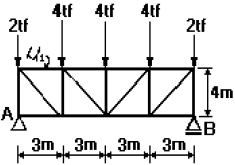
- 4.5tf
- -4.5tf
- 6tf
- -6tf
(정답률: 19%)
47. 그림과 같은 구조용 강재의 단면2차반경이 2㎝일 때 세장비(λ)는 얼마인가?
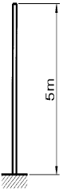
- 100㎝
- 200㎝
- 350㎝
- 500㎝
(정답률: 알수없음)
48. 그림과 같은 단면의 x-x축에 대한 단면2차모멘트 값은?
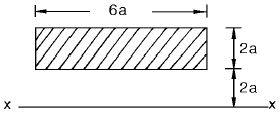
- 94a4
- 104a4
- 112a4
- 120a4
(정답률: 알수없음)
49. 단면적이 10cm2이고, 길이는 2m 인 균질한 재료로 된 철근에 재축방향으로 10tf의 인장력을 작용시켰을 때 늘어난 길이는? (단, 탄성계수는 2.0×106kgf/cm2)
- 1.0cm
- 0.1cm
- 0.01cm
- 0.001cm
(정답률: 알수없음)
50. 장방형 단면의 철근콘크리트 기둥에서 띠철근의 역할은?
- 철근과 콘크리트의 부착력 증가
- 콘크리트의 압축강도 증가
- 주근 단면의 보충
- 주근의 좌굴을 방지
(정답률: 알수없음)
51. 보강콘크리트 블록조에 관한 다음의 기술 중 부적당한 것은?
- 내력벽은 통줄눈 쌓기로 해도 된다.
- 내력벽의 두께는 그 길이, 높이에 의해 결정된다.
- 테두리보는 수직방향뿐만 아니라 수평방향의 힘도 고려하여 설계하지 않으면 안된다.
- 벽량의 계산에서는 내력벽의 두께가 두꺼운 경우 그 길이를 할증하지 않으면 안된다.
(정답률: 28%)
52. 보강 블록조에서 테두리보를 설치하는 가장 중요한 이유는?
- 바닥틀, 지붕틀을 설치하기에 편리하다.
- 내력벽과 일체가 되어 건물을 보강한다.
- 벽의 수장에 편리하다.
- 벽에 개구부를 안전하게 설치하기 위한 것이다.
(정답률: 알수없음)
53. 직경 10㎜의 원형강에 최대 800㎏f의 하중을 매달았을때 안전율은 약 얼마인가? (단, 원형강의 극한 강도는 5000㎏f/㎝2이다.)
- 0.20
- 3.86
- 4.02
- 4.91
(정답률: 10%)
54. 판보(plate girder)에서 리벳, 볼트 등으로 접합된 보의 플렌지의 커버플레이트 수는 최대 몇 장 이하로 하는가?
- 3장
- 4장
- 5장
- 6장
(정답률: 46%)
55. 철골구조의 합성보에서 철골보와 슬래브를 일체화시킬 때 그 접합부에 생기는 전단력에 저항시키기 위하여 사용되는 접합재는?
- 시어 커넥터(shear connector)
- 게이지 라인(gage line)
- 중도리(purline)
- 스페이스 프레임(space frame)
(정답률: 25%)
56. 장방형 단면을 가진 보의 단면적이 A, 전단력이 V이면 이 보 단면의 최대 전단 응력도는?
- V/A
- 3V/2A
- 4V/3A
- 3V/4A
(정답률: 42%)
57. fck = 27MPa(=270㎏f/㎝2 ), fy = 300MPa(=3,000㎏f/㎝2 )인 보통콘크리트에 D19 철근이 사용될 때 기본정착길이는 약 얼마인가?
- 290mm
- 330mm
- 670mm
- 820mm
(정답률: 25%)
58. 1방향 슬래브(one way slab)의 변장비(λ = ℓy/ℓx)는?
- λ ＞ 2.0
- λ ≤ 2.0
- λ ≥ 2.0
- λ ＜ 2.0
(정답률: 알수없음)
59. 그림과 같이 빗금친 부분의 단면에서 X - X축에 대한 단면 2차 모멘트로 맞는 것은?
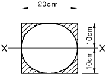
- 21183㎝4
- 13333㎝4
- 7850㎝4
- 5480㎝4
(정답률: 16%)
60. 극한강도설계법에서 단면이 400mm×400mm 이고 주근이 8-D16으로 배근되어 있는 철근콘크리트 기둥에 띠철근을 D10으로 사용할 경우, 띠철근의 최대 수직간격으로 다음중 가장 적당한 것은?
- 150mm
- 200mm
- 250mm
- 300mm
(정답률: 알수없음)
4과목: 건축설비
61. 전기에 관한 용어와 단위의 연결 중 옳지 않은 것은?
- 전압 : Volt[V]
- 전류 : Watt[W]
- 저항 : Ohm[Ω]
- 전기량 : Coulomb[C]
(정답률: 알수없음)
62. 배관의 마찰저항에 관한 기술 중 맞는 내용은?
- 배관의 마찰저항은 관의 길이에 반비례한다.
- 배관의 마찰저항은 관내경이 클수록 커진다.
- 배관내 마찰저항은 유체의 점성이 클수록 커진다.
- 배관내 마찰저항은 유속에 정비례한다.
(정답률: 알수없음)
63. 스케일(Scale) 현상이 보일러에 미치는 영향에 대해 설명한 것 중 옳지 않은 것은?
- 보일러 전열면의 과열 원인이 된다.
- 워터해머를 일으킨다.
- 보일러에 연결하는 코크나 그밖의 작은 구멍을 막는다.
- 열의 전도를 방해하고 보일러효율을 불량하게 한다.
(정답률: 20%)
64. 철근콘크리트 건축물에 전기 공사를 할 때 다음 사항 중 제일 마지막에 하는 공사는?
- 전선관(conduit tube)배관
- 분전반 매설
- 전선관에 전선 인입
- 콘크리트 박스나 아우트렛 박스(outlet box)고정
(정답률: 24%)
65. 다음은 분전반(分電盤)을 설명한 것이다. 잘못 설명한 것은?
- 주개폐기, 분기회로용 분기 개폐기 및 자동차단기 등을 한곳에 모아서 설치한 것이다.
- 보수나 조작에 편리하도록 복도나 계단 부근의 벽에 설치하는 것이 좋다.
- 분전반의 케이스는 전기설비 기준에 따른 접지공사를 해야 한다.
- 분기 회로의 길이가 50m 정도가 되도록 위치를 정하는 것이 가장 바람직하다.
(정답률: 30%)
66. 공기조화설비의 전공기방식에 속하지 않는 것은?
- 단일덕트 방식
- 이중덕트 방식
- 팬코일 유닛 방식
- 멀티존 유닛 방식
(정답률: 알수없음)
67. 전화설비의 자동식 교환실의 환경조건에 대한 설명으로 옳지 않은 것은?
- 유효천장 높이는 보통 4m 이상으로 한다.
- 바닥은 리놀륨, 비닐타일 또는 플로링마무리로 한다.
- 실내온도는 10℃~35℃ 정도로 한다.
- 상대습도는 40~70% 정도로 한다.
(정답률: 28%)
68. 신축이음쇠 중 2개 이상의 엘보우를 사용하여 나사회전을 이용해서 신축을 흡수하는 조인트로서 너무 큰 신축에는 파손되어 누수의 원인이 되며 저압증기관 및 난방공급수 직관에서 분기하여 방열기에 이르는 배관에 사용되는 것은?
- 스위블형
- 루프형
- 슬리브형
- 벨로우즈형
(정답률: 28%)
69. 다음과 같은 순환 펌프의 동력은 약 몇 ㎾인가? (단, 수량 Q = 300ℓ/min, 양정 = 10mAq, 펌프효율 = 55%)
- 0.89
- 1.23
- 6.82
- 0.27
(정답률: 알수없음)
70. 옥내배선의 설계 순서로서 가장 알맞은 것은?
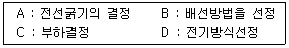
- A - B - C - D
- C - D - B - A
- B - A - D - C
- D - B - A - C
(정답률: 22%)
71. 건물의 실내환경에서 실감온도(유효온도)의 요소는?
- 습도, 기류, 복사
- 온도, 습도, 복사
- 온도, 습도, 기류
- 온도, 기류, 복사
(정답률: 알수없음)
72. 방열기의 EDR이란?
- 상당방열면적
- 방열기 섹션수
- 방열기 응축수량
- 최대방열량
(정답률: 알수없음)
73. 그림과 같은 위험물 저장고에 피뢰침을 설치하고자 한다. 피뢰침의 높이(h)는 최소 얼마 이상이어야 하는가?
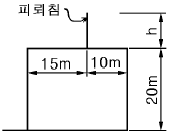
- 10m
- 15m
- 20m
- 25m
(정답률: 알수없음)
74. 인터폰의 접속방식에 따른 분류와 관계가 먼 것은?
- 모자식
- 상호식
- 복합식
- 광전관식
(정답률: 알수없음)
75. 복사 난방에 대한 설명 중 옳지 않은 것은?
- 실내의 온도분포가 균등하고 쾌감도가 높다.
- 평균온도가 낮기 때문에 동일 방열량에 대해 손실 열량이 크다.
- 구조체를 덥히게 되므로 예열시간이 길어져 일시적으로 쓰는 방에는 부적당하다.
- 하자 발견이 어렵고 보수가 어렵다.
(정답률: 6%)
76. 급탕설비에 대한 설명 중에서 가장 옳은 것은?
- 중앙식 급탕법은 급탕 개소가 적을 경우에는 시설비가 싸게 든다.
- 기수혼합법은 열효율이 70∼90%로 소음이 따르는 결점이 있다.
- 직접가열법은 보일러에 걸리는 압력과 건물의 높이와는 무관하므로 저압보일러로 충분하다.
- 간접가열식은 스케일이 부착하는 일이 적고 전열효율이 높다.
(정답률: 알수없음)
77. 연면적이 10000m2인 사무소에서 다음과 같은 조건이 있을 때 사무소에 필요한 1일의 급수량(사용수량)은? (단, 유효 면적비 56%, 거주인원 0.2인/m2, 1일1인당 사용수량은 100ℓ/d로 한다.)
- 112 m3/d
- 1120 m3/d
- 224 m3/d
- 2240 m3/d
(정답률: 10%)
78. 온수난방에서 역환수방식(Reverse Return System)을 채택 하는 주된 이유는?
- 배관의 길이를 축소하기 위해
- 온수의 유량분배를 균일하게 하기 위해
- 순환펌프를 설치하기 위해
- 열손실과 발생소음을 줄이기 위해
(정답률: 40%)
79. 정화조의 원리를 설명한 다음 사항 중 옳은 것은?
- 다량의 물에 의하여 오물을 희석한다.
- 약품에 의하여 오물을 분해한다.
- 미생물작용으로 오물을 분해한다.
- 침전작용으로 오물을 분해하여 사멸시킨다.
(정답률: 34%)
80. 수질 관련 용어중 BOD란 무엇인가?
- 생물화학적 산소요구량
- 화학적 산소요구량
- 용존산소량
- 수소이온농도
(정답률: 30%)
5과목: 건축관계법규
81. 16층 이상인 건축물에 대한 구조계산 자격자의 기준으로 적합하지 않은 자는?
- 건축구조기술사
- 건축구조분야의 공학박사학위를 가진 자로서 3년이상 건축구조분야의 업무를 수행한 자
- 건축구조분야의 공학석사학위를 가진 자로서 9년이상 건축구조분야의 업무를 수행한 자
- 건축기사의 자격을 가진 자로서 9년 이상 건축구조분야의 업무를 수행한 자
(정답률: 59%)
82. 건축물의 피난층외의 층으로부터 피난층으로 통하는 직통 계단을 2개소 이상 설치해야 하는 것은?
- 공동주택의 용도에 쓰이는 층으로서 그층의 당해 용도에 쓰이는 거실(층당 4세대인 5층 공동주택)의 바닥면적의 합계가 300m2인 것
- 영화관의 용도에 쓰이는 2층으로서 그 층의 관람석의 바닥면적의 합계가 200m2인 것
- 병원의 용도에 쓰이는 2층으로서 그 층의 당해용도에 쓰이는 거실의 바닥면적의 합계가 200m2인 것
- 아동관련시설의 용도에 쓰이는 2층으로서 그 층의 당해용도에 쓰이는 거실의 바닥면적의 합계가 200m2 인 것
(정답률: 알수없음)
83. 배연설비에 대한 기술 중 잘못된 것은?
- 배연풍도는 불연재료를 사용해야 한다.
- 배연구는 연기감지기에 의하여 자동으로 열 수 있는 구조로 하되, 손으로도 열고 닫을 수 있도록 한다.
- 배연구는 예비전원에 의하여 열 수 있도록 한다.
- 배연구의 유효면적은 1제곱미터 이상으로서 그 면적의 합계가 당해 건축물의 바닥면적의 50분의 1 이상으로 한다.
(정답률: 37%)
84. 대지 및 건축물관련 건축허용오차 범위로 옳지 않은 것은?
- 출구 너비 : 2% 이내
- 건축선의 후퇴거리 : 2% 이내
- 반자 높이 : 2% 이내
- 바닥판 두께 : 3% 이내
(정답률: 27%)
85. 노외주차장인 주차전용건축물의 용적률을 조례로 정하고자 할 경우 그 최대한도는?
- 900퍼센트
- 1100퍼센트
- 1300퍼센트
- 1500퍼센트
(정답률: 7%)
86. 건축법상 다중이용건축물에 해당되지 않는 것은?
- 16층의 판매 및 영업시설
- 바닥면적이 4000m2인 종합병원
- 바닥면적이 5000m2인 판매 및 영업시설
- 20층인 관광숙박시설
(정답률: 알수없음)
87. 비상용승강기의 승강장의 구조에 관한 기준으로 옳지 않은 것은?
- 벽 및 반자가 실내에 접하는 부분의 마감재료는 불연 재료로 할 것
- 승강장의 바닥면적은 비상용승강기 1대에 대하여 6제곱미터 이상으로 할 것
- 피난층이 있는 승강장의 출입구로부터 도로에 이르는 거리가 20m 이하일 것
- 채광이 되는 창문이 있거나 예비전원에 의한 조명 설비를 할 것
(정답률: 알수없음)
88. 허가권자가 가로구역별로 건축물의 최고높이를 지정하고자 할 때 고려하여야 할 사항이 아닌 것은?
- 도시관리계획등의 토지이용계획
- 도시미관 및 경관계획
- 장래도시인구 및 방재계획
- 당해도시의 장래 발전계획
(정답률: 알수없음)
89. 상업지역내에 각 층 바닥면적 1500m2인 건축물을 신축할 경우 부설주차장의 최소 주차대수는 얼마인가? (단, 지상 1∼2층 : 위락시설, 지상 3∼5층 : 숙박시설)
- 45대
- 50대
- 53대
- 60대
(정답률: 27%)
90. 주차단위구획과 접하지 아니한 차로의 너비를 2.5m 이상으로 할 수 있는 조건과 관계 없는 것은?
- 부설주차장
- 자주식주차장
- 건축물식
- 총 주차대수의 규모가 8대 이하
(정답률: 27%)
91. 대형 기계식주차장에 있어서 출입구 전면에 확보하여야 할 전면공지의 크기(너비×길이)는?
- 8.1m×9.5m 이상
- 8.7m×9.8m 이상
- 10.0m×11.0m 이상
- 10.3m×11.0m 이상
(정답률: 50%)
92. 자주식주차장으로서 지하식 노외주차장의 차로구조에 관한 기술 중 틀린 것은?
- 경사로의 종단구배는 직선부분에서는 14%를 초과하여서는 아니된다.
- 굴곡부는 자동차가 5m 이상의 내변반경으로 회전이 가능하도록 하여야 한다.
- 높이는 주차바닥면으로부터 2.3m 이상으로 하여야한다.
- 주차대수규모가 50대 이상인 경우의 경사로는 너비 6미터 이상인 2차선의 차로를 확보하거나 진입차로와 진출차로를 분리하여야 한다.
(정답률: 43%)
93. 아래 주차형식 중 차로의 너비가 가장 큰 것은?
- 60° 대향주차
- 직각주차
- 교차주차
- 45° 대향주차
(정답률: 알수없음)
94. 다음 중 방화구획의 적용을 완화 받을 수 없는 것은?
- 장례식장의 용도에 쓰이는 거실로서 시선 및 활동 공간의 확보를 위하여 불가피한 부분
- 건축물의 최상층으로서 로비의 용도에 사용하는 부분으로서 당해 용도로의 사용을 위하여 불가피한 부분
- 판매 및 영업시설의 용도에 쓰이는 거실로서 시선 및 활동공간의 확보를 위하여 불가피한 부분
- 공공용시설중 군사시설에 쓰이는 건축물
(정답률: 알수없음)
95. 다음의 행위 중 대수선에 해당하지 않는 것은?
- 보와 기둥을 각각 3개 해체하여 수선 또는 변경하는 것
- 지붕틀을 3개 해체하여 수선 또는 변경하는 것
- 미관지구 안에서 건축물의 외부형태 또는 담장을 변경하는 것
- 비내력벽의 벽면적을 30제곱미터 해체하여 수선 또는 변경하는 것
(정답률: 알수없음)
96. 다음 중 바닥면적의 산정방법에 있어 조건에 관계없이 예외규정이 인정되지 않는 부위는?
- 공동주택으로서 지상층에 설치한 어린이놀이터
- 지상층에 설치한 물탱크
- 공동주택으로서 지상층에 설치한 기계실
- 공동주택의 피로티 부분
(정답률: 알수없음)
97. 도로 모퉁이에서의 건축선의 지정을 적용 받아야 하는 경우는?
- 도로의 교차각이 120도 이상인 경우
- 도로의 교차각이 90도 미만인 경우
- 교차되는 도로의 너비 중 하나가 8m 이상인 경우
- 교차되는 도로의 너비 중 하나가 4m 미만인 경우
(정답률: 17%)
98. 5층 이상의 층의 용도가 다음과 같을 때, 피난의 용도에 쓰이는 옥상광장을 설치하지 않아도 되는 것은?
- 소매시장
- 수도원
- 예식장
- 호텔
(정답률: 10%)
99. 노외주차장의 출구와 입구를 각각 따로 설치해야 하는 주차대수 규모 기준은?
- 300대를 초과하는 규모
- 350대를 초과하는 규모
- 400대를 초과하는 규모
- 450대를 초과하는 규모
(정답률: 알수없음)
100. 주차전용건축물의 규정에서 주차면적비율과 아무런 관계가 없는 것은?
- 대지면적
- 연면적
- 기계실
- 관리사무소
(정답률: 9%)